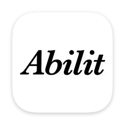

Abilit
매일 해낸 일이 능력이 되고, 그 능력이 하나의 원석으로 자랍니다. · iOS · macOS · 2026
평범을 거부하고 더 나은 자신을 원하는 사람을 위한, 성장을 눈으로 보는 루틴 트래커입니다. 하루 12포인트를 내가 정한 능력에 투자하고, 할 일을 끝내는 순간 구슬 한 알이 태어나 원석에 응결됩니다. 분기가 끝나면 그 구슬들이 굳어 한 겹이 되고, 겹이 쌓여 나이테가 됩니다.
순위도 등급도 없습니다. 비교 대상은 어제의 나뿐입니다.
이렇게 만들었습니다
- SwiftUI + SpriteKit · 구슬은 물리 엔진 위에 있습니다. 잡아서 휘젓고 던질 수 있습니다
- 발견 · 분기마다 90일의 기록이 "나는 어떤 사람이었나"를 알려줍니다. 할 일 내용이 기기를 벗어나지 않습니다
- SwiftData + CloudKit · 기기 간 동기화